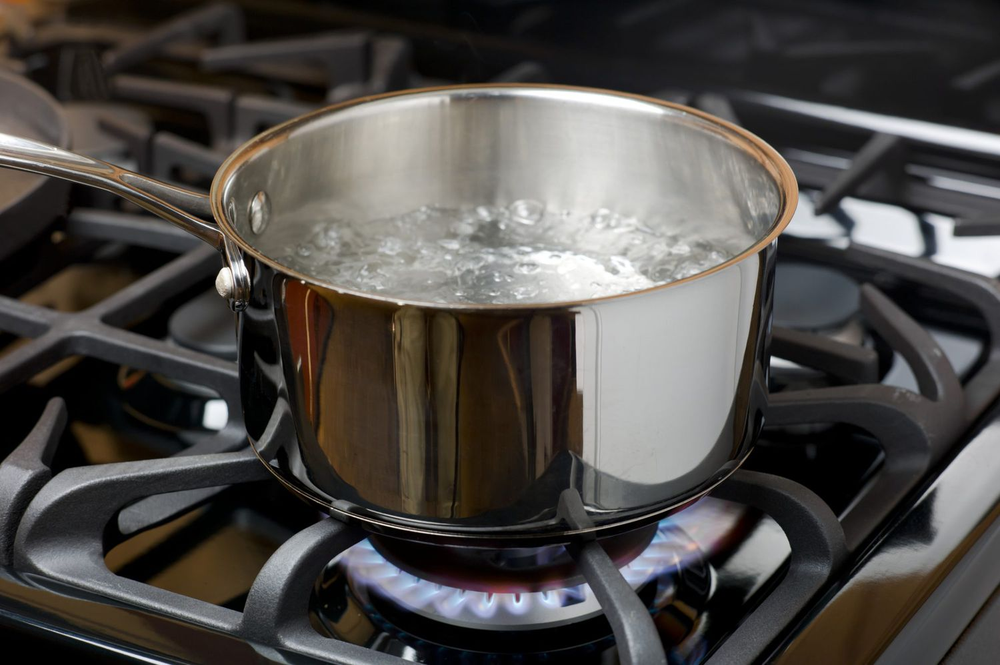

Delicious Boiled Water

Delicious boiled water recipe that can be used for anything such as pasta or making a nice broth.
Ingredients
- A medium or large pot
- Water
- Salt
- Pepper
Steps and Preparation
- Grab a medium or large pot and fill about halfway with water.
- Put the pot of water on the stove and turn the burner onto medium-high heat.
- Heat the water on the stove and add your salt and pepper.
- Watch the water and once you see big bubbles start to come up throughout the pot you know you have boiling water.
- Finish the recipe by using the boiling water for whatever you like.